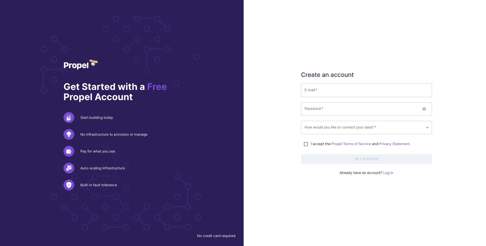
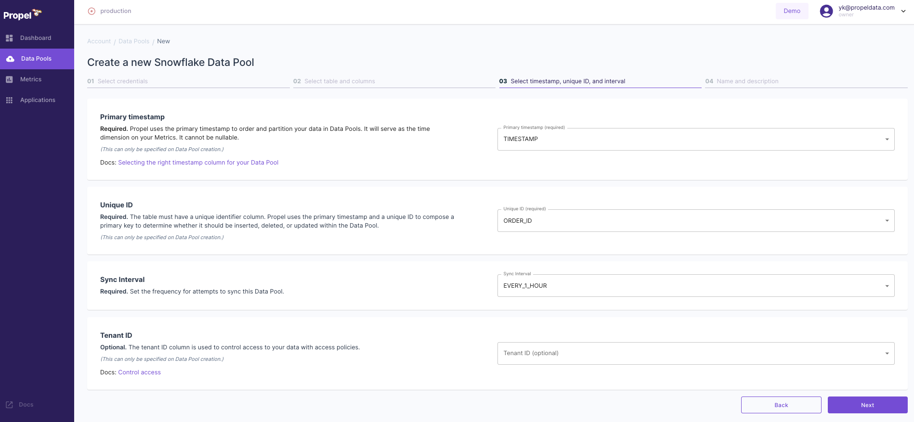

In this guide, we walk through how to use Propel to create a GraphQL API on top of Snowflake. While there are other methods to interface with Snowflake—such as Snowflake's REST API and language-specific connectors—this guide will concentrate on the Propel method. For a broader understanding of all three methods, refer to the comprehensive guide on Snowflake Medium: Snowflake API: Comprehensive Guide to 3 Methods With Examples.
Overview of Using Propel
Propel offers a seamless way to create fast, efficient GraphQL APIs over your Snowflake data. This method is particularly advantageous for scenarios demanding low latency and high concurrency, such as customer-facing analytics dashboards.
If you prefer a video overview, feel free to take a look at our interview with Snowflake's Daniel Myers on Snowflake's YouTube channel: Using Propel To Accelerate The Process Of Creating Analytics For Web And Mobile Applications.
Prerequisites
- Basic understanding of Snowflake and GraphQL
- Access to Snowflake instance
- A Propel account
What You'll Learn
- Setting up data in Snowflake for Propel integration
- Configuring Propel to work with Snowflake
- Creating and testing GraphQL APIs on top of your Snowflake data
What You'll Build
- A low-latency, high-concurrency GraphQL API on top of Snowflake using Propel
Let's proceed.
Overview
This section provides a step-by-step guide to setting up example data in Snowflake. This step is optional, and if you already have data in Snowflake, you can use that for this tutorial.
Why Example Data?
Setting up example data can be particularly useful for understanding how to integrate and manipulate data when creating a GraphQL API using Propel. It provides a practical example to work with, ensuring you can effectively follow the steps in this guide.
Example Data Description
The example data simulates taco orders from various restaurants, with details like timestamp, restaurant name, taco type, toppings, and total price.

Setting Up Example Data
Follow these steps to set up your example data:
- Create the Table: Run this SQL query in Snowflake to create a
taco_orderstable:
CREATE TABLE taco_orders (
TIMESTAMP TIMESTAMP_NTZ,
ORDER_ID STRING,
RESTAURANT_NAME STRING,
TACO_NAME STRING,
TORTILLA_NAME STRING,
SAUCE_NAME STRING,
TOPPINGS VARIANT,
QUANTITY INTEGER,
TACO_UNIT_PRICE FLOAT,
TACO_TOTAL_PRICE FLOAT
);
- Insert Sample Data: Execute this query to insert sample data into the
taco_orderstable:
INSERT INTO taco_orders
(TIMESTAMP, ORDER_ID, RESTAURANT_NAME, TACO_NAME, TORTILLA_NAME, SAUCE_NAME, TOPPINGS, QUANTITY, TACO_UNIT_PRICE, TACO_TOTAL_PRICE)
SELECT '2023-09-14T07:32:24.234208Z', 'a1234567-b8c9-0123-d456-e789f012a345', 'El Buen Sabor', 'Breakfast', 'Corn', 'Salsa Roja', ARRAY_CONSTRUCT('Lime', 'Guacamole'), 3, 3, 9 UNION ALL
SELECT '2023-09-14T07:33:25.234209Z', 'b2345678-c9d0-1234-e567-f890a123b456', 'La Taqueria', 'Barbacoa', 'Flour', 'Chimichurri', ARRAY_CONSTRUCT('Lime', 'Radishes'), 2, 3.5, 7 UNION ALL
SELECT '2023-09-14T07:34:26.234210Z', 'c3456789-d0e1-2345-f678-9012a345c678', 'Taqueria Cancun', 'Veggie', 'Whole Wheat', 'Chipotle Mayo', ARRAY_CONSTRUCT('Black beans', 'White beans'), 4, 2.75, 11 UNION ALL
SELECT '2023-09-14T07:35:27.234211Z', 'd4567890-e1f2-3456-a789-0123b456d789', 'Los Compadres', 'Grilled Fish', 'Corn', 'Queso Blanco', ARRAY_CONSTRUCT('Lime', 'Guacamole'), 1, 4, 4 UNION ALL
SELECT '2023-09-14T07:36:28.234212Z', 'e5678901-f234-4567-b890-1234c567e890', 'Farolito', 'Carne Asada', 'Flour', 'Habanero Hot Sauce', ARRAY_CONSTRUCT('Lime', 'Radishes', 'Onions'), 3, 3.5, 10.5 UNION ALL
SELECT '2023-09-14T07:37:29.234213Z', 'f6789012-a345-5678-c901-2345d678f901', 'Taqueria Vallarta', 'Chorizo', 'Whole Wheat', 'Cilantro Lime', ARRAY_CONSTRUCT('Guacamole', 'Cheese'), 2, 3.25, 6.5 UNION ALL
SELECT '2023-09-14T07:38:30.234214Z', '01234567-b8c9-6789-d012-e345f678a234', 'El Buen Sabor', 'Pollo', 'Corn', 'Mango Salsa', ARRAY_CONSTRUCT('Guacamole', 'Cheese'), 4, 3, 12 UNION ALL
SELECT '2023-09-14T07:39:31.234215Z', '12345678-c9d0-7890-e123-f456a789b012', 'La Taqueria', 'Al Pastor', 'Flour', 'Salsa Verde', ARRAY_CONSTRUCT('Lime', 'Radishes'), 1, 3.5, 3.5 UNION ALL
SELECT '2023-09-14T07:40:32.234216Z', '23456789-d0e1-8901-f234-a567b890c123', 'Taqueria Cancun', 'Veggie', 'Whole Wheat', 'Chipotle Mayo', ARRAY_CONSTRUCT('Black beans', 'White beans'), 3, 2.75, 8.25 UNION ALL
SELECT '2023-09-14T07:41:33.234217Z', '34567890-e1f2-9012-a345-b678c901d234', 'Los Compadres', 'Grilled Fish', 'Corn', 'Queso Blanco', ARRAY_CONSTRUCT('Lime', 'Guacamole'), 2, 4, 8 UNION ALL
SELECT '2023-09-14T07:26:18.234202Z', 'a1b2c3d4-e5f6-4789-a012-b345c678d901', 'El Buen Sabor', 'Pollo', 'Corn', 'Mango Salsa', ARRAY_CONSTRUCT('Guacamole', 'Cheese'), 2, 3, 6 UNION ALL
SELECT '2023-09-14T07:27:19.234203Z', 'b2c3d4e5-f6a7-4890-b123-c456d789e012', 'La Taqueria', 'Al Pastor', 'Flour', 'Salsa Verde', ARRAY_CONSTRUCT('Lime', 'Radishes'), 4, 3.5, 14 UNION ALL
SELECT '2023-09-14T07:28:20.234204Z', 'c3d4e5f6-a7b8-4901-c234-d567e890f123', 'Taqueria Cancun', 'Veggie', 'Whole Wheat', 'Chipotle Mayo', ARRAY_CONSTRUCT('Black beans', 'White beans'), 3, 2.75, 8.25 UNION ALL
SELECT '2023-09-14T07:29:21.234205Z', 'd4e5f6a7-b8c9-4012-d345-e678f901a234', 'Los Compadres', 'Grilled Fish', 'Corn', 'Queso Blanco', ARRAY_CONSTRUCT('Lime', 'Guacamole'), 1, 4, 4 UNION ALL
SELECT '2023-09-14T07:30:22.234206Z', 'e5f6a7b8-c9d0-4123-e456-f789a012b345', 'Farolito', 'Carne Asada', 'Flour', 'Habanero Hot Sauce', ARRAY_CONSTRUCT('Lime', 'Radishes', 'Onions'), 2, 3.5, 7 UNION ALL
SELECT '2023-09-14T07:31:23.234207Z', 'f6a7b8c9-d0e1-4234-f567-8901a234b567', 'Taqueria Vallarta', 'Chorizo', 'Whole Wheat', 'Cilantro Lime', ARRAY_CONSTRUCT('Guacamole', 'Cheese'), 4, 3.25, 13 UNION ALL
SELECT '2023-09-14T07:22:14.234198Z', '04861317-09f9-4dc8-a93d-f10e06d78ff0', 'Los Compadres', 'Carnitas', 'Whole Wheat', 'Chipotle Mayo', ARRAY_CONSTRUCT('Lime', 'Radishes'), 3, 3.25, 9.75 UNION ALL
SELECT '2023-09-14T07:23:15.234199Z', '0d8e653f-557b-4dab-a596-7fbee99703e7', 'La Taqueria', 'Grilled Fish', 'Whole Wheat', 'Queso Blanco', ARRAY_CONSTRUCT('Lime', 'Guacamole', 'White beans'), 4, 4, 16 UNION ALL
SELECT '2023-09-14T07:24:16.234200Z', 'ab45cd73-a7ad-4c07-98f8-7d4b98fb6c2d', 'La Taqueria', 'Veggie', 'Flour', 'Salsa Verde', ARRAY_CONSTRUCT('Black beans', 'Cheese'), 1, 2.75, 2.75 UNION ALL
SELECT '2023-09-14T07:25:17.234201Z', '4be5efdf-5ea6-409f-8814-26d9d03b8f85', 'Taqueria Cancun', 'Grilled Fish', 'Whole Wheat', 'Mango Salsa', ARRAY_CONSTRUCT('Radishes'), 4, 4, 16;
- Verify Data Insertion: To check the data, execute:
SELECT * FROM taco_orders;
This query will display the data you've inserted like this:

Next Steps
With your data ready, either the example data or your own, you can move on to the next steps.
Introduction to Propel
In this part of the guide, we'll explore using Propel, an analytics platform with a semantic layer, to create a high-performance GraphQL API over your Snowflake data.
Advantages of Using Propel
Propel offers significant benefits for handling Snowflake data in a GraphQL API:
- Low Latency: With a separate caching and storage system, Propel significantly speeds up analytics data querying, typically achieving millisecond response times.
- High Concurrency: The serverless architecture of Propel enables scaling to handle a virtually unlimited number of concurrent users or requests.
- Better Timezone Handling: Propel simplifies the process of querying and serving data in different timezones, a crucial feature for global applications.
- Organized Code: Propel reduces the complexity of managing multiple SQL queries, making multi-tenant use cases more manageable.
Ideal Use Cases
Propel is particularly useful in scenarios demanding low latency and high concurrency, such as customer-facing analytics dashboards.
Setting Up Propel with Example Data
To utilize Propel with the example taco order data:
- Confirm Data Setup: Ensure you have the example data by running:
SELECT * FROM taco_orders;
in the correct database and schema. This verifies that the example data has been properly created.

- Enable Change Tracking: Before setting up Propel, enable CHANGE_TRACKING on your
taco_orderstable (or your own table) with this query:
ALTER TABLE TACO_ORDERS SET CHANGE_TRACKING = TRUE;
Next Steps
With your data setup confirmed and change tracking enabled, you're now ready to dive into configuring Propel to work with your Snowflake data.
This section will guide you through the process of configuring your Snowflake environment to integrate seamlessly with Propel. This involves setting up a dedicated Snowflake user, role, and warehouse for Propel, and optionally configuring Snowflake Network Policies to include Propel's IP addresses.
Step 1: Sign Up for Propel
Before starting the configuration, make sure you have signed up for a Propel account. Visit Propel's website and complete the sign-up process.

Step 2: Create Snowflake User, Role, and Warehouse for Propel
It's recommended to create a dedicated user, role, and warehouse in Snowflake for Propel. This enhances security by adhering to the principle of least privilege and facilitates cost monitoring and control. Here's a script to set up these components:
begin;
use role accountadmin;
/* Create variables for user, password, role, warehouse, database, and schema (needs to be uppercase for objects) */
set role_name = 'PROPELLER';
set user_name = 'PROPEL_USER';
set warehouse_name = 'PROPELLING';
/* Must be at least 8 characters long, contain at least 1 digit, 1 uppercase letter and 1 lowercase letter */
set user_password = ''; /* Replace with a strong password */
set database_name = 'ANALYTICS'; /* Replace with your Snowflake database name */
set schema_name = 'ANALYTICS.PUBLIC'; /* Replace with your Snowflake schema name */
/* Grant sysadmin role access to the database */
grant usage,modify
on database identifier($database_name)
to role sysadmin;
/* Grant sysadmin role access to the schema */
grant usage,modify
on schema identifier($schema_name)
to role sysadmin;
/* Change role to securityadmin for user / role steps */
use role securityadmin;
/* Create a role for Propel */
create role if not exists identifier($role_name);
grant role identifier($role_name) to role SYSADMIN;
/* Change role to sysadmin for warehouse and database steps */
use role sysadmin;
/* Create a warehouse for Propel */
create warehouse if not exists identifier($warehouse_name)
warehouse_size = xsmall
warehouse_type = standard
auto_suspend = 60
auto_resume = true
initially_suspended = true;
/* Change role to securityadmin for user / role steps */
use role securityadmin;
/* Create a user for Propel */
create user if not exists identifier($user_name)
password = $user_password
default_role = $role_name
default_warehouse = $warehouse_name;
grant role identifier($role_name) to user identifier($user_name);
/* Change role to accountadmin for warehouse and database steps */
use role accountadmin;
/* Grant Propel role access to the warehouse */
grant usage, monitor
on warehouse identifier($warehouse_name)
to role identifier($role_name);
/* Grant Propel role access to the database */
grant usage, monitor
on database identifier($database_name)
to role identifier($role_name);
/* Grant Propel role access to the schema */
grant create procedure, create stage, create task, create stream, usage
on schema identifier($schema_name)
to role identifier($role_name);
/* Grant Propel role select on all tables in the schema */
grant select on all tables
in schema identifier($schema_name)
to role identifier($role_name);
/* Grant Propel role select on all future tables in the schema */
grant select on future tables
in schema identifier($schema_name)
to role identifier($role_name);
grant execute task on account
to role identifier($role_name);
commit;
This script will:
- Create a Propel-specific Role: This role (
PROPELLER) is tailored for Propel's access and operations within Snowflake. - Establish a Dedicated Warehouse: The script sets up a warehouse (
PROPELLING) specifically for Propel, with pre-configured settings. - Generate a Propel User: A user (
PROPEL_USER) is created and assigned the Propel role and warehouse as defaults. - Grant Necessary Permissions: The script ensures the Propel role has the required permissions on the warehouse, database, and schema. This includes select permissions on all current and future tables in the specified schema.
Note: Replace placeholder values in the script (such as user_password, database_name, and schema_name) with your specific details before execution.
Step 3: (Optional) Configure Snowflake Network Policy
If your Snowflake environment uses Network Policies, you might need to update them to allow Propel's IP addresses:
- 3.17.239.162
- 3.15.73.135
- 18.219.73.236
This ensures that Propel can communicate with your Snowflake instance without any network restrictions.
Conclusion and Next Steps
With the Snowflake user, role, and warehouse now set up for Propel, and the network policies updated (if applicable), your Snowflake environment is ready for integration with Propel. This foundation allows you to proceed with building and optimizing your GraphQL API using Propel.
Having configured your Snowflake environment for Propel integration, the next step is to create a Data Pool in Propel. Data Pools are Propel's proprietary storage system designed for fast, efficient analytical queries.
Initiate Data Pool Creation
- In the Propel Console, locate the menu on the left-hand side and click on "Data Pools".
- Click on the plus sign (+) to initiate the creation of a new Data Pool.

- In the new screen, select Snowflake as your data source.

Adding Credentials
- Click on "Add new credentials".

- Provide a unique name for your credentials.
- Enter the required Snowflake details: account, database, schema, warehouse, role, user, and password.Note: Your Snowflake account format should be "accountId.region.cloud" (e.g., "fn25463.us-east-2.aws"). Exclude the "snowflakecomputing.com" domain.

- After entering all details, click "Create and test Credentials".
- Upon successful connection, you should see a "Connected" status message.

Setting Up Data Pool Configuration
- Continue with the setup flow.
- Select the table and columns for use in your Data Pool.
- You can opt for the default selection, which includes all columns.

- You can opt for the default selection, which includes all columns.
- For the "Primary timestamp", choose "TIMESTAMP".
- For "Unique ID", select "ORDER_ID". 
Finalizing the Data Pool
- Click "Next" and review your setup to ensure accuracy.

- You have the option to preview your data to confirm that it's loading correctly.

Conclusion
After these steps, your Data Pool in Propel will be set up, integrating your Snowflake data for efficient querying. This setup is crucial for building and optimizing your GraphQL API using Propel and Snowflake data.
Next Steps
With your Data Pool in place, you can proceed to the next phase of developing your GraphQL API using Propel on Snowflake.
After establishing a Data Pool in Propel, the next crucial step is to create Metrics. Metrics in Propel enable the creation of effective GraphQL queries for your data.
Initiating Metric Creation
- Click on "New" in the left-hand side menu of the Propel Console.
- Select "Metric" to begin the process.

Configuring Metric Details
Provide essential information for your new Metric:
- Name: Give it a unique identifier, such as "Taco Soft Revenue".
- Description: Offer a brief explanation, like "Metric to keep track of taco revenue".
- Data Pool: Choose the Data Pool you created earlier (e.g., "Taco Test").
- Metric Type: Select the type of calculation, such as "SUM".
- Measure: Pick the specific data field to measure, like "TACO_TOTAL_PRICE".
This Metric configuration is aimed at tracking the revenue generated from taco sales.

Selecting Dimensions
- Choose the columns that will serve as dimensions.
- These dimensions are filters you can apply to your Metric data.

- After filling out all the required fields, click "Create".
Conclusion
Creating Metrics is a pivotal step in setting up your GraphQL API. These Metrics will enable you to query specific data points within your Snowflake data through Propel. With the Metrics set up, you're now one step closer to testing and utilizing your GraphQL API.
Next Steps
With the Metrics created, you can move forward to the final stages of testing and deploying your GraphQL API, harnessing the power of Propel and Snowflake for efficient data querying and analytics.
Overview
The final step in leveraging Propel with Snowflake is to test the GraphQL API created based on your Metrics. This step is crucial for ensuring that your API is functioning correctly and is ready for practical use.
Accessing the Playground for Testing
- After setting up your Metric, locate and click on the "Playground" option within the Propel Console.
- The Playground is an interactive environment where you can test GraphQL queries against your Metrics.

Testing the GraphQL API
You can learn more about how to use this GraphQL API, as well as check examples in a few different languages on the Query your data page on our documentation.
Next Steps
With successful testing, you can confidently proceed to implement your GraphQL API in real-world scenarios, making the most of your Snowflake data through Propel's powerful querying capabilities.